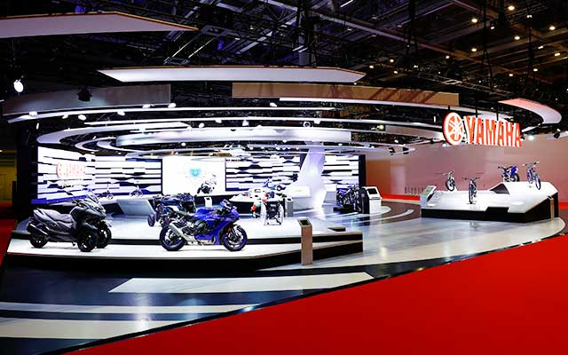
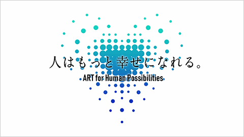
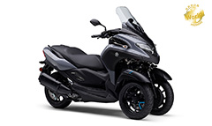
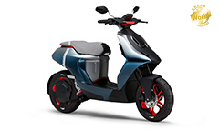

Japanese | English
Japanese |
English


At Yamaha, we have always placed people at the center,
creating methods of mobility that
foremost value human feelings,
sensations and experiences, and thereby bring users real
fulfillment.
Even today, as the doors of a new mobility revolution are opening,
we know that if we stay
true to the path we have followed to this day,
Yamaha will move forward in the right
direction for the future of personal mobility.
So we shall make a proclamation: the real mobility revolution for us lies in a different space,
one separate from creating modes of transportation for greater convenience and efficiency.
It is a revolution to ensure that the sensations and experiences that make us human remain
at the core of mobility to come.
Our Long-Term Vision of ART for Human Possibilities puts forward the hypothesis
that if we
can solve the multitude of issues facing our world and enable diverse means
for
self-fulfillment through technologies that build on our capabilities
as humans, then there
is greater joy for us yet to come.
The future of mobility at Yamaha can be seen here today.
The technology we have—and have yet to create—is how we can make that future better and better,
because we believe that there is indeed, still greater joy yet to come for all of us.
October 30, 2019
Events "Tokyo Motor Show 2019" released
October 23, 2019
The Yamaha Motor Booth at the 46th Tokyo Motor Show 2019“There Is Greater Joy Yet to Come”


The 46th TOKYO MOTOR SHOW 2019 YAMAHA OPENING MOVIE
(Japanese version only. YouTube)

YAMAHA MW-VISION

Tricity300

Land Link Concept

E01

E02

YPJ-YZ

YZF-R1

Ténéré700
Display Models
share on facebook
share on Twitter
© Yamaha Motor Co., Ltd.